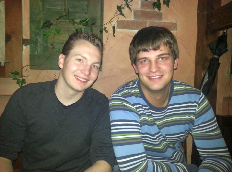

Eingesetzte Software
- Arch Linux ARM für Raspberry Pi (ARMv6) http://archlinuxarm.org/platforms/armv6/raspberry-pi
- OpenCV 2.4 http://opencv.org/
- ServoBlaster https://github.com/richardghirst/PiBits/tree/master/ServoBlaster
- raspicam 0.0.5 http://sourceforge.net/projects/raspicam/
- mechanical eyes (entwickelt im Verlauf dieses Projekts) https://github.com/bluec0re/mechanical_eyes
Installationsanleitung
- Installiere cmake
- Installiere opencv
- Installiere mmal (meistens bereits in der Raspi Firmware enthalten [raspberrypi-firmware-tools])
- Buildprozess servoblaster
git clone https://github.com/richardghirst/PiBits cd PiBits/ServoBlaster/user makeOptional auf dem raspbian OS (triggert Autostart):make install - Buildprozess raspicam
cd <mechanical_eyes dir>/libs/raspicam-0.0.5/ mkdir build && cd build cmake .. make && make install - Buildprozess mechanical_eyes
cd <mechanical_eyes dir> mkdir build && cd build cmake .. make && make install
Video Processing
Zur Erkennung von Personen im aufgezeichneten Bild wird die Grafikbibliothek OpenCV verwendet. Dazu wird das Bild zunächst vorverarbeitet um Fehlerquellen wie Lichtverhältnisse möglichst klein zu halten. Die Vorverarbeitung beinhaltet neben der Umwandlung in ein Schwarz-Weiß-Bild die anschließende normalisierung der Farbwerte. Dabei wird das Helligkeitsspektrum auf Werte zwischen 0 und 255 gestreckt. Das resultierende Bild ermöglicht es leichter Helligkeitsabstufungen zu erkennen. Auf ein smoothing zur Rauschunterdrückung wurde explizit verzichtet um die Rechenlast für den Raspberry Pi möglichst klein zu halten.Die eigentliche Erkennung erfolgt mit dem HaarCascade Algorithmus. Dazu werden Helligkeitsdifferenzen anhand von zuvor trainierten Modellen im Bild gesucht.
Das Resultat bei einem erfolgreich gefundenen Gesicht ist im folgenden Bild zu erkennen:

Verwendete Materialien
- Aluminium Profil 2,5cm x 1,5cm
- Sperrholzplatten
- Siphonrohr 5cm Durchmesser
- Tischtennisbälle
- Schrauben
- Büroklammern (Federstahl)
- Raspberry Pi
- Breakout Board
- Modellbau Steckverbindungen
- Batteriepack (inkl. 4 AA Batterien)
Aufbau
- ...
Team

Kevin Schaller und Timo Schmid
Probleme
Downloads
Aufgabenstellung und Planung
Aufgabe war die Planung und Umsetzung eines Roboters, welcher mithilfe eines Raspberry Pis und Kamera Personen mit seinen Augen verfolgen kann.